O que é inclusão?
Inclusão social é o conjunto de meios e ações que combatem a exclusão aos benefícios da vida em sociedade, é o ato de incluir e acrescentar, ou seja, adicionar coisas ou pessoas em grupos e núcleos que antes não faziam parte. Socialmente, a inclusão representa um ato de igualidade entre os diferentes indivíduos que habitam determinada sociedade.

Deficiência
Segundo o Instituto Brasileiro de Geografia e Estatística (IBGE), que se alinha à Convenção Internacional sobre os Direitos das Pessoas com Deficiência, adotada na Assembleia Geral das Nações Unidas em 13 de dezembro de 2006 e assinada pelo Brasil em 30 de março de 2007, a atual definição de deficiência estabelece que pessoas com deficiência são aquelas que têm impedimentos de longo prazo de natureza física, mental, intelectual ou sensorial, os quais, em interação com diversas barreiras, podem obstruir sua participação plena e efetiva na sociedade em igualdade de condições com as demais pessoas.
Deficientes auditivos no Brasil
Quando o assunto é pessoas com deficiências auditivas, de acordo com o censo realizado em 2010, pelo IBGE, cerca de 10 milhões de brasileiros possuem deficiência auditiva (DA), o que representa 5% da população brasileira. Deste total, cerca de 2 milhões possuem a deficiência auditiva severa e 7,5 milhões apresentam alguma dificuldade auditiva. No que se refere a idade, cerca de 1 milhão de deficientes auditivos são crianças e jovens até 19 anos. O censo também revelou que o maior número de deficientes auditivos estão concentrados nas áreas urbanas (cerca de 6,7 milhões).

A maior causa de surdez no Brasil, segundo o Instituto Nacional de Educação para Surdos(INES) é a meningite bacteriana ou vitórica, e além dessa, nas crianças até dois anos a surdez pode ser causada por infecção de ouvido persistente e surdez congênita. No cenário infantil, as academias de Audiologia, Otorrinolaringologia e Pediatria afirmam que aproximadamente 0,1% das crianças no mundo nascem com deficiência auditiva severa e profunda. Ademais, a sociedade brasileira de Otologia (ramo da medicina que estuda a patologia, anatomia e fisiologia do ouvido) afirma que cerca de 15% a 20% da população no país tem zumbido, sintoma que indica perda auditiva. Destes, apenas 15% se sentem incomodados com o barulho e procuram ajuda médica. A entidade também aponta que cerca de 30% a 35% das perdas de audição são creditadas à exposição a sons intensos, sejam eles em ambientes profissionais ou em lazer (como shows ou aparelhos eletrônicos).
Deficientes auditivos na educação
Além disso, as barreiras são evidenciadas em diversas áreas importantes na sociedade, como por exemplo a educação, onde a população com essa dificuldade se enquadra em porcentagens muito baixas de formação. Segundo estudo feito pelo Instituto Locomotiva e a Semana da Acessibilidade Surda em 2019, cerca de 7% dos surdos brasileiros têm ensino superior completo, 15% frequentaram a escola até o ensino médio, 46% até o fundamental, enquanto 32% não têm um grau de instrução.
Deficientes auditivos na área de trabalho
No mercado trabalho, implica a necessidade de considerar que as principais barreiras enfrentadas são, sobretudo, de ordem sonora, em vez de arquitetônicas, e a incompreensão ou negação desse fato vai de encontro à criação de alguns mitos e concepções sobre o cotidiano profissional de uma pessoa com deficiência auditiva. Além disso, outro grande desafio que as pessoas surdas enfrentam no mercado de trabalho é o capacitismo (37% trabalham por conta própria, possivelmente porque tenham desistido de arrumar emprego).
Deficientes auditivos na saúde
Na área da saúde, os deficientes auditivos são alvos de escassez de informação sobre a mesma, sendo vulnerabilizados a pegar doenças, enfrentam dificuldades nos atendimentos em hospitais sofrendo com a falta de profissionais qualificados em seus atendimentos. Além disso, esse grupo tem seu emocional afetado de diversas formas, podendo desenvolver problemas psicológicos e mesmo sendo mais propensos a patologias mentais, eles tem menos acesso especializados.
Oque podemos fazer para auxiliar na inclusão?
A Linguagem Brasileira de Sinais, libras, é um meio utilizado pelos deficientes auditivos para se comunicar. Apesar das pessoas portadoras dessa deficiência serem em grande número, a libras não é tão ensinada ou reconhecida, sendo assim poucas as pessoas que se comuniquem por ela. Na maioria dos casos, os deficientes auditivos são excluídos diariamente na sociedade, porque não tem uma forma prática de se comunicar ou de ser entendido.
Para auxiliar na inclusão você, leitor, pode buscar aprender a libras e incentivar outras pessoas a aprenderem o mesmo. Em nosso site nós te damos algumas formas de aprender a libras, sendo elas:
Na aba Aulas, onde recomendamos algumas aulas básicas do YouTube;
Em nosso Blog, postamos diversos cursos, sendo presenciais, onlines, pagos ou gratuitos;
Na aba Aplicativos, que avaliamos e te indicamos aplicativos que auxiliam na aprendizagem da linguagem.